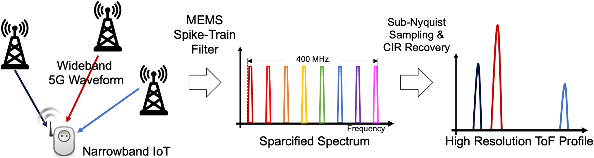
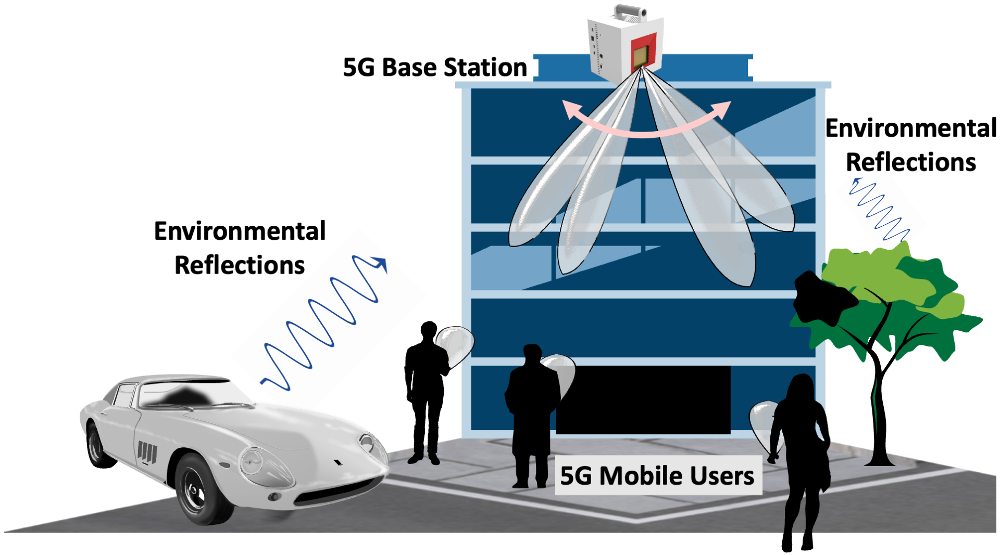
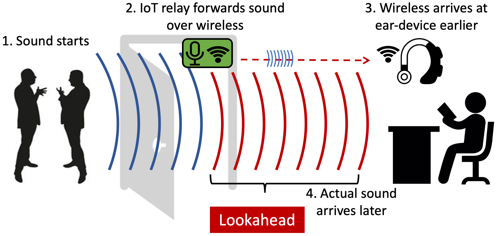

Hi, I’m Junfeng (Jayden) Guan
I am a Wireless Research Engineer at Bosch Research, Sunnyvale, USA.
After finishing my PhD at University of Illinois Urbana-Champaign (UIUC) in 2022, I worked as a postdoctoral researcher at École Polytechnique Fédérale de Lausanne (EPFL) in Lausanne Switzerland.
My research interests are in the area of wireless and radar sensing systems, Integrated Sensing and Communication (ISAC), and enabling AI to understand the physical world from multimodal sensor data.
Education
École Polytechnique Fédérale de Lausanne, Lausanne, Switzerland
Postdoctoral Researcher, 2023-2024
Laboratory of Sensing and Networking Systems (SENS)
University of Illinois Urbana-Champaign, Champaign, IL, USA
Doctor of Philosophy, 2017-2022
Electrical and Computer Engineering
Advisor: Haitham Hassanieh
University of Illinois Urbana-Champaign, Champaign, IL, USA
Bachelor of Science, 2013-2017
Electrical Engineering
Selected Research Projects
Millimeter-Wave Radar Perception
Bootstrapping Autonomous Radars with Self-Supervised Learning
, , , , , and
* co-primary first authors
CVPR 2024
, , , , , and
* co-primary first authors
CVPR 2024

MEMS Spike-Train Filter Enhanced Wireless Sensing and Localization


Joint Communication and Sensing in mmWave 5G/6G Networks

3D Imaging Using Millimeter Wave 5G Signal Reflections
, , , and
IEEE TMTT 2021 / Paper
3D Imaging using 5G Signals
, , , and
RFIC 2020 / Paper
Best Industrial Paper Finalists
, , , and
IEEE TMTT 2021 / Paper
3D Imaging using 5G Signals
, , , and
RFIC 2020 / Paper
Best Industrial Paper Finalists
Acoustic Internet of Things

Experience
Nokia Bell Labs, Jun. 2021 - Aug. 2021
Radio Systems Bell Labs Summer Intern
Murray Hill, New Jersey (Remote)
IBM Research, May. 2019 - Aug. 2019
Graduate Research Intern
IBM Thomas J. Watson Research Center, New York
Misc.
ConfSearch: A conference search tool for computer science conferences.
Connected Papers: Explore connected papers in a visual graph.
Copyright 2022 Junfeng Guan